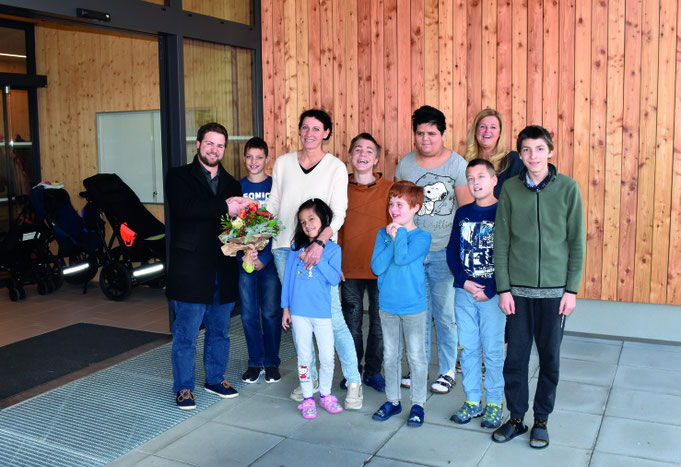
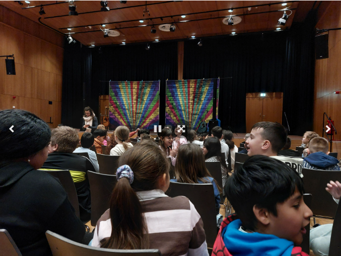
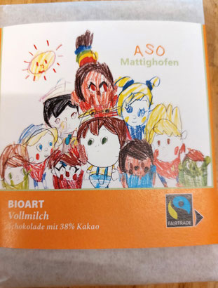
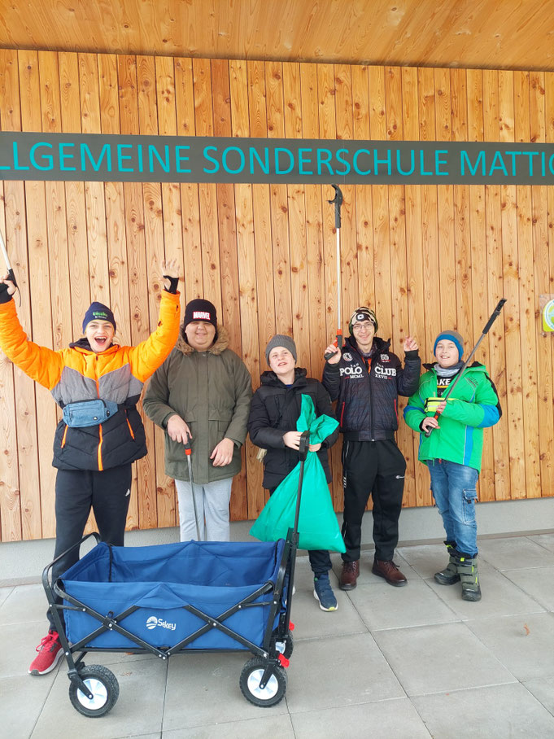

Ein neues Schuljahr beginnt!
September 2026
Ein neues Schuljahr liegt vor uns. Wir freuen uns sehr, auf neue und bekannte Gesichter! Allen Schülerinnen, Schülern und Lehrpersonen einen guten Start ins Schuljahr 2026/2027!

September 2026
Ein neues Schuljahr liegt vor uns. Wir freuen uns sehr, auf neue und bekannte Gesichter! Allen Schülerinnen, Schülern und Lehrpersonen einen guten Start ins Schuljahr 2026/2027!
Schnuppern jederzeit möglich
Du bist Sonderschullehrer oder Sonderschullehrerin mit einem großen Herzen und viel Freude am Tun? Besuch uns und überzeug dich von unserer positiven und respektvollen Atmosphäre! Die erfüllende Arbeit mit den Kindern in der ASO Mattighofen wächst dir sogleich ans Herz. Komm uns doch einmal zum Schnuppern besuchen!
Schuljahr 2024/2025
Seit November 2022 sind wir in unserem neuen, wunderschönen Gebäude am Trattmannsberger Weg 4c untergebracht. Nach den Jahren im provisorischen Gebäude am Stadtplatz 3 freuen wir uns besonders über die ebenerdigen Räumlichkeiten und den großzügig gestalteten Garten. Kinder wie Lehrerinnen haben sich gut eingelebt und genießen die Zeit in unserer neuen Schule!

Ostern 2026
Die Vorbereitungen für Ostern sind in vollem Gange!


Ostern 2026
Die Schülerinnen und Schüler des Poly Mattighofen haben uns zu einer Osterjause und lustigen Spielen eingeladen. Vielen Dank!
Schuljahr 2025/2026
Unsere Schülerinnen und Schüler haben lustige Krokodile als gesunden Snack vorbereitet.

Schuljahr 2025/2026
Das Mitmachkonzert hat alle begeistert! Unsere Schüler und Schülerinnen waren mit Freude und Begeisterung dabei. Vielen Dank für die Einladung!


Schuljahr 2025/2026
Ein Schauspielensemble hat uns einen spannenden Theatervormittag beschert. Unsere Schülerinnen und Schüler waren begeistert und haben die Vorstellung konzentriert und gespannt verfolgt.
Wir durften einen aufregenden Vormittag mit der Theateraufführung "Die Gebrüder Grimm erzählen: Brüderchen und Schwesterchen" erleben. Unsere Schülerinnen und Schüler waren mit Begeisterung dabei.
Vielen Dank an das Schauspielensemble unter der Leitung von Cassandra Rühmling und an die großzügige Spenderin Claudia Schwöllinger und den großzügigen Spender Franz Hintermaier, die uns gemeinsam diesen Theatergenuss ermöglichten.


Dezember 2025
Auch heuer wieder hat uns der Nikolaus in der ASO Mattighofen dank unserer lieben Schüler und Schülerinnen besucht. Wir wünschen allen schöne Ferien und fröhliche Weihnachten!

Schuljahr 2025/2026
Wir verabschieden uns von einer sehr engagierten, enorm erfahrenen und fähigen, höchst musikalischen, professionell unterrichtenden und vor allem ganz, ganz lieben Kollegin. Wir wünschen ihr alles Gute für den wohlverdienten Ruhestand. Vielen Dank für alles! Genieße den neuen Lebensabschnitt, liebe Christine!

September 2025
Wir begrüßen alle Schülerinnen, Schüler und Lehrkräfte im neuen Schuljahr! Die Schule wächst, denn heuer besuchen 38 Kinder unsere Schule und wir dürfen zwei neue Lehrkräfte begrüßen! Wir freuen uns auf ein ereignisreiches, spannendes Schuljahr!
23. Mai 2025
Unsere Vernissage am 23. Mai 2025 war ein voller Erfolg! Mit der Live-Musik "Trio Royal" und leckerem Fingerfood und Getränken haben wir unsere zahlreichen Gäste begrüßen dürfen.
Viele interessierte Besucher haben unsere Kunstwerke bestaunt und einige haben ein Bild oder einen Fisch käuflich erworben. Vielen Dank für das große Interesse! Und vielen Dank den fleißigen Eltern, die für ein köstliches Buffet gesorgt haben!
Schuljahr 2024/2025
Die liebevoll gestaltete fairtraide Schokolade war bei uns heuer erhältlich! Unsere Schüler und Schülerinnen durften gemeinsam die Verpackung dieser leckeren Vollmilch-Schokolade entwerfen. Wenn wir wieder welche verkaufen, wird das ganz oben bei unseren Neuigkeiten zu lesen sein!

Schuljahr 2024/2025
Wir durften die Lebenshilfe Mattighofen besuchen. Peter hat uns gezeigt wie das geht, und wir waren mit Feuereifer dabei. Herzlichen Dank!
Unsere getöpferten Kunstwerke waren ebenfalls bei unserer Vernissage am 23. Mai zu bewundern.
Schuljahr 2024/2025
Unsere fleißigen Schüler und Schülerinnen waren als Müllsammler auf unserem Schulgelände unterwegs. Wir und die Umwelt danken es ihnen!

Schuljahr 2024/2025
Wir waren dabei! Beim Solidaritäts-Run 2024 hat uns auch unser Bürgermeister Daniel Lang kräftig mit einem selbst gebastelten Plakat angefeuert! Vielen lieben Dank!
September 2024
Willkommen im neuen Schuljahr 2024/2025! Wir freuen uns wieder auf schöne Erlebnisse und Begegunungen mit unseren Schülerinnen und Schülern!
Schuljahr 2023/2024
Wir durften die Polizeiinspektion Mattighofen besuchen! Bezirksinspektorin Frau Barbara Strasser hat uns die Aufgaben der Polizei erklärt, und die Räume und Autos der Polizei gezeigt. Vielen Dank für diese informative und nette Führung!
Schuljahr 2023/2024
Den Waldtag haben alle genossen! Bei tollem Sonnenschein haben wir ein Picknick im Wald gemacht, sind hoch hinauf geklettert und haben sogar Musik gemacht. Es war ein schöner Ausflug!
Mai 2024
Wir wünschen allen Müttern, Mamas und Großmüttern einen schönen Muttertag!
Schuljahr 2023/2024
Wir haben die Feuerwehr besucht! Herr Roman Vorreiter hat uns alles gezeigt und erklärt was ein echter Feuerwehrmann oder eine echte Feuerwehrfrau so braucht. Vielen Dank für diese spannende Führung!
Ostern 2024
Die Jause zum Osterfest ist wie jedes Jahr ein Highlight für unsere Schüler und Schülerinnen.
Schuljahr 2023/2024
Diesmal hat unsere Kochgruppe etwas leckeres gezaubert - Spinatknödel mit Karottensauce!
Fasching 2024
Der Fasching wurde so richtig gefeiert!
Schuljahr 2023/2024
Fridolina die Clownin war bei uns zu Gast. Organisiert wurde die Vorstellung von Frau Claudia Schwöllinger. Die Kinder waren begeistert. Vielen Dank!
Dezember 2023
Auch heuer wieder hat der Nikolaus unsere braven Schüler und Schülerinnen reichlich beschenkt.
Halloween 2023
Zum Gruseln und Fürchten wurde es diesmal bei der schaurig leckeren Helloween-Jause!
Schuljahr 2023/2024
Diesmal hatten wir wieder tierische Gäste! Stachelige kleine Igel haben uns in der ASO Mattighofen besucht. Damit wir gut vorbereitet sind, haben wir einige spannende Fakten gelernt. Aus diesem Anlass wurden unsere Laternen heute auch zu piksigen Freunden.
Schuljahr 2023/2024
Wer schnuffelt denn da? Unsere Freundin Lola war uns schon öfter mit ihrem Frauchen Petra Zehetner in unserer Schule besuchen. Trotz zaghaftem Start wurde die Hündin bald ausgiebig gestreichelt. Wir freuen uns sehr auf ein baldiges Wiedersehen!
Schuljahr 2023/2024
Herr Reichartinger vom Roten Kreuz war bei uns. Wir durften so einiges über seine Arbeit erfahren und lernen wo das Rote Kreuz überall im Einsatz ist. Wir durften sogar in dem Einsatzauto Platz nehmen. Herzlichen Dank für diesen Tag!
September 2023
Wir wünschen allen Schülerinnen und Schülern wie auch ihren Familien und dem Schulpersonal einen angenehmen Start in das neue Schuljahr!
Juli 2023
Abgeschlossen haben wir dieses Jahr mit einem interreligiösen Gottesdienst in der Kapelle des Bezirksseniorenzentrums Mattighofen. Wir bedanken uns, dass dieses Jahr mit vielen Neuerungen so gut verlaufen ist und freuen uns auf schöne, erholsame Ferien!
Schuljahr 2022/2023
Die KTM Motohall in Mattighofen ist ein 10.000 m² großes, barrierefreies Motorsport- und Technikmuseum mit interaktiven Ausstellungen, Originalmotorrädern und Workshops. Wir waren dort und waren allesamt sehr begeistert von den in der Motorhall ausgestellten Fahrzeugen.
Schuljahr 2022/2023
Die Kinderfestspiele in Salzburg haben alle begeistert. Die Philharmonie Salzburg mit Lisi Fuchs hat uns die Geschichte von Peter und der Wolf sehr fesselnd musikalisch erzählt.
Schuljahr 2022/2023
Mit der liebevollen Geschichte vom Geburtstagsgeschenk hat uns der Kasperl verzaubert. Vielen Dank!
Schuljahr 2022/2023
... und haben unseren Beitrag geleistet!
Schuljahr 2022/2023
Frau Angelika Stockinger vom BAV Braunau hat uns mit einer spannenden Geschichte das Thema Mülltrennung näher gebracht.
Ostern 2023
Die Schülerinnen und Schüler des Poly Mattighofen haben uns auf eine Osterjause eingeladen. Die liebevoll vorbereitete Jause hat allen ausgezeichnet geschmeckt und beim Eierpecken hatten wir großen Spaß. Vielen Dank für die nette Einladung und die freundliche, zuvorkommende Bewirtung!
Schuljahr 2022/2023
Wir wurden zur Vorstellung der Musikmittelschule Eggelsberg eingeladen. Herzlichen Dank für die Einladung und das tolle Musical!
Februar 2023
Der Fasching wurde wieder ausgelassen gefeiert! Wir haben unsere eigene Dekoration gebastelt und uns toll verkleidet.
Februar 2023
Die lieben Eltern der Schüler und Schülerinnen unserer 3. Klasse bekommen heuer selbstgebackene Valentinsherzen!
Dezember 2022
Eine gemütliche Weihnachtsfeier bot die Gelegenheit einem hervorragend arbeitenden Team für den unermüdlichen Einsatz und das große Engagement zu danken. Ein besonders herzliches Danke an Frau Sandra Maislinger für die großzügige Einladung!
Schuljahr 2022/2023
Mit großer Begeisterung und Freude bestaunten die Eltern unserer Kinder die Räumlichkeiten unserer neuen Schule! Für das leibliche Wohl sorgte wie immer Karin Reichinger. Dankeschön!
Advent 2022
Diesmal war Frau Alexandra Haigerer bei uns und hat uns gezeigt wie man einen Adventkranz richtig bindet. Herzlichen Dank!
Advent 2022
Frische leckere Plätzchen und bunt verziehrte Lebkuchenhäuschen sind die wunderbaren Ergebnisse unserer Weihnachtsbäckereiwerkstatt!
November 2022
Unser erstes Fest im neuen Schulgebäude war unsere Martinsfeier. Mit viel Musik, tollen Spielen und leckeren Kipferl zum Teilen haben wir diesen besonderen Festtag erlebt.
Schuljahr 2022/2023
Endlich ist es soweit! Nach den Herbstferien durften wir endlich in das neu ausgestattete und moderne Schulgebäude einziehen! Alle Schülerinnen und Schüler wie auch unser komplettes Schulteam freuen sich sehr auf die neuen Möglichkeiten die das neue Gebäude für uns bereithält.
September 2022
Wir begrüßen alle Schüler und Schülerinnen wie auch unser Team zurück aus den Sommerferien in unserer Schule. Alle freuen sich schon sehr auf ein tolles und ereignisreiches neues Schuljahr!
Schuljahr 2021/2022
Unser Schuljahr war wie immer sehr erlebnisreich! Wir waren am Spielplatz und im Wald, haben Leckeres gebacken, geschnippelt und gekocht und natürlich fleißig gelernt. Wir bedanken uns bei allen für das tolle Schuljahr und freuen uns schon auf ein Wiedersehen nach den Sommerferien!